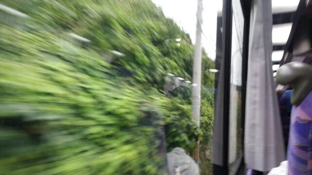
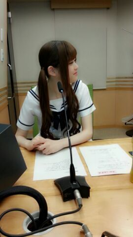
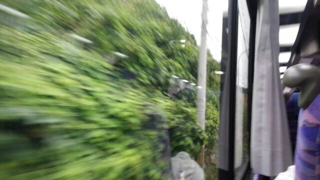
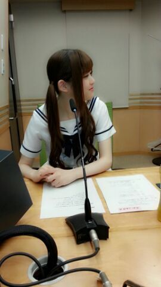

| 2013/07 15 Mon | 川村真洋 今はみさ先輩と愛されまあやと 移動中★ ろ ってぃ-(・ω・) |
こんにちわーん U^ェ^U ) ) )
ろってぃ-♪だよ〜。
昨日乃木どこで
久々にTVで喋れた
川後のひなと (^o^)
昨日の乃木どこのオンエアがあって
これでやっと自信もって
「あっ、 この前
乃木どこ出てたよねぇ〜＼(^^)／
見たよ〜 。」
って言われても
「あっ、うん！この前は出た〜」
と言えるね あは。☆
でもなあ、
出てたね って言われて
「えっ、ぃゃ...
選抜だけやから出てないで ／」
って何回か言ったことあるんやけど
相手 何て返してくると思うー？？笑
・・・・
「えっ、 出てたよぉー(^ω^)
映ってるの見たら嬉しくて
何でか分からんけど まひろちゃんの
親目線になってしまうわぁー 」 って
・・・・・・・
『本人が出ていないと
言っているのになぁぁ、笑
んー、きっと誰かの間違えだ』
と心の中で思いながら
「ありがとお〜(*^^*)」
って言うんだよね ♪笑
それとそれとさっ、
まひろも あの話したよぉ？？
ちゃんと聞いてくれたあ？
皆の意見を まひろが
ちゃんと代弁して言えてたでしょ
(≡・x・≡)笑？
え。
それとそれと もう１つさっ、
最後に 『扇風機』が
流れたーーー )))))
どうでしたかあ( '・∨・)？？
「あー、って言いたくなるぅ〜〜♪」
で 私が最後を
しめくくってしまった...
あははは〜〜 ) ) )
てなわけで、、
この、１枚目 ２枚目の写メは
昨日の秋田でのliveが終わった
直後 バスの中で撮った写メだよ\(^∨^)/
ファンの皆さん
秋田県の 皆さん
秋田 ２日間に渡り
ありがとうございました！！
昨日、制服のマネキン★を
ななみんポジでしました ！
なんだか こんな所で
こうやって何曲もliveができるって
本当 いいなぁ〜 (*´ω｀*)と
思いました。
バス移動の時も
見事にずぅ〜〜と緑で
『うわぁぁ、いい景色だぁ〜♪ヽ(´▽｀)/』
と思いながら 外を
眺めてました( ・∨・)キラキラ
生駒ちゃんも 地元で
乃木坂のliveをすることを
ずっと願ってて
その夢を一緒に叶えれたことが
幸せです。

バスの一番後ろの座席から撮ったよ/
緑の壁がずっと続いたり
田んぼが一面に広がってたり
山が近くにいっぱいあったり...
こんな所で 少しの間だけでも
いいから住んでみたいなぁ.ω
と思ったよ ^^
ではっ、今日これから仕事行ってきます！！
乃木のの☆ のトーク中に
さゆりんパシャリ。

以上っ ろってぃ-でした☆☆☆のし
と心の中で思いながら
「ありがとお〜(*^^*)」
って言うんだよね ♪笑
それとそれとさっ、
まひろも あの話したよぉ？？
ちゃんと聞いてくれたあ？
皆の意見を まひろが
ちゃんと代弁して言えてたでしょ
(≡・x・≡)笑？
え。
それとそれと もう１つさっ、
最後に 『扇風機』が
流れたーーー )))))
どうでしたかあ( '・∨・)？？
「あー、って言いたくなるぅ〜〜♪」
で 私が最後を
しめくくってしまった...
あははは〜〜 ) ) )
てなわけで、、
この、１枚目 ２枚目の写メは
昨日の秋田でのliveが終わった
直後 バスの中で撮った写メだよ\(^∨^)/
ファンの皆さん
秋田県の 皆さん
秋田 ２日間に渡り
ありがとうございました！！
昨日、制服のマネキン★を
ななみんポジでしました ！
なんだか こんな所で
こうやって何曲もliveができるって
本当 いいなぁ〜 (*´ω｀*)と
思いました。
バス移動の時も
見事にずぅ〜〜と緑で
『うわぁぁ、いい景色だぁ〜♪ヽ(´▽｀)/』
と思いながら 外を
眺めてました( ・∨・)キラキラ
生駒ちゃんも 地元で
乃木坂のliveをすることを
ずっと願ってて
その夢を一緒に叶えれたことが
幸せです。

バスの一番後ろの座席から撮ったよ/
緑の壁がずっと続いたり
田んぼが一面に広がってたり
山が近くにいっぱいあったり...
こんな所で 少しの間だけでも
いいから住んでみたいなぁ.ω
と思ったよ ^^
ではっ、今日これから仕事行ってきます！！
乃木のの☆ のトーク中に
さゆりんパシャリ。

以上っ ろってぃ-でした☆☆☆のし